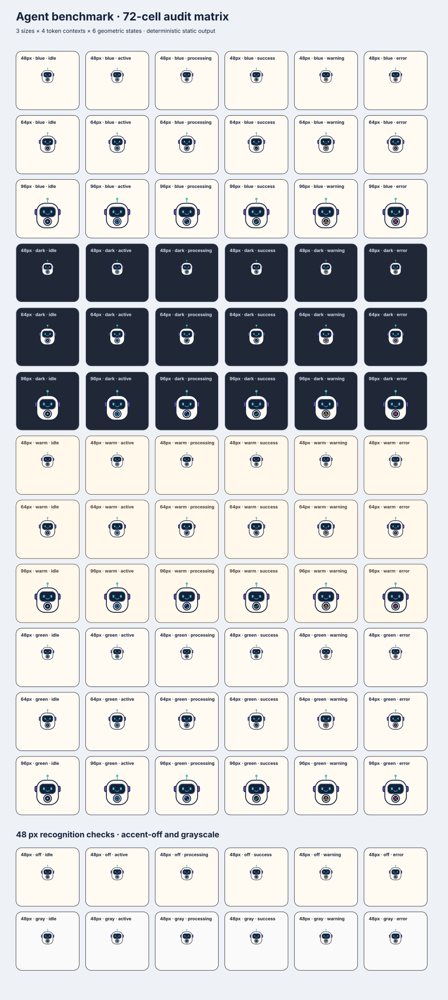

Contact sheet

24a2e8b0d97d75400fffddd89858762e052e43af2a732b05d58e9174ab181587.Manual review checklist
- 48 px recognition: the robot reads immediately without relying on the label.
- Silhouette and visual weight: the capsule shell remains dominant and visually balanced.
- Face readability: both eyes and the simple mouth remain distinct at the smallest size.
- Accent-off recognition: identity survives when accent tokens collapse to neutral colors.
- Four contexts: compare blue, dark, warm, and green token declarations.
- State deferral: no semantic-state glyph appears or is implied in this first-release asset.
Review scope
Judge only the static Agent candidate and its recognition matrix. This page is generated from the canonical asset through the preview adapter; labels belong to the review surface, not the icon asset.